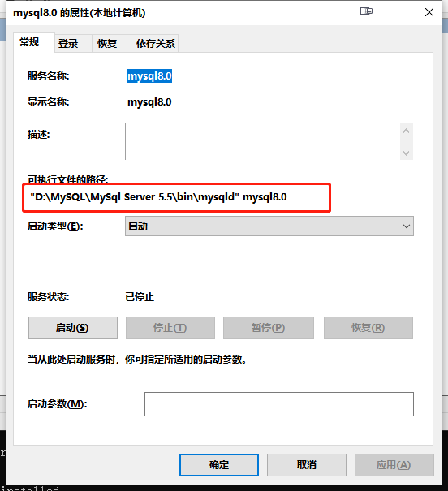
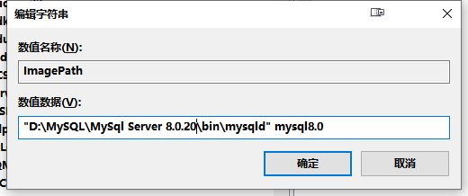

1、首先先去官网将自己需要的版本下载到本地
由于我的电脑已经安装了mysql5.5与mysql5.7，为方便演示，使用mysql8.0.20进行安装。
1 | https://dev.mysql.com/downloads/mysql/ |
2、解压路径
我将mysql 8.0.20解压至目录D:\MySQL\MySql Server 8.0.20\。同时从mysql5.5那边复制了一份my.ini。
3、配置环境变量
我这里直接添加mysql8.0.20的bin目录到Path中：
4、配置my.ini
1 | [client] |
5、安装服务mysql8.0（第一步）
以管理员权限运行cmd，然后进入目录
D:\MySQL\MySql Server 8.0.20\bin\安装mysql8.0服务：
1
mysqld --install mysql8.0
若安装成功，则提示Service successfully installed：

6、初始化服务
由于在my.ini配置了以下路径：

因此，执行以下指令对其进行初始化：
1 | mysqld --initialize --console |
我记得我在mysql5.7执行这条指令时遇到了两个问题：
①报错unknown variable ‘table-cache=256’ 。解决方案是将my.ini的table_cache修改为table_open_cache。
②报错unknown variable ‘innodb_additional_mem_pool_size=2M’。解决方案是添加路径配置tmpdir=”D:/MySQL/MySQL Server 8.0/Data/“（路径随意，我这里选择与sql8.0 server同路径），同时注释掉innodb_additional_mem_pool_size=2M这个配置。
注意：每次报错修改完my.ini文件后，需要删掉Data文件，否则会产生两次初始化之间的冲突。
然后现在是在mysql8.0中执行这条指令，却遇到了其他问题：
①报错 Error while setting value ‘STRICT_TRANS_TABLES,NO_AUTO_CREATE_USER,NO_ENGINE_SUBSTITUTION’ to ‘sql_mode’。解决方案是注释条mysql.ini的这行配置。理由貌似是mysql5.x是不允许BLOB/TEXT类型的字段拥有默认值，而在mysql8.0中将其该为NOT STRICT模式，则该指令是可以执行的。
②报错unknown variable ‘query_cache_size=0’，同样注释掉该配置。
③报错unknown variable ‘innodb_additional_mem_pool_size=2M’，之后我按照之前按照mysql5.7的经验，将innodb_additional_mem_pool_size=2M这个配置注释掉，然后添加路径配置tmpdir=”D:/MySQL/MySQL Server 8.0/Data/“。然而一直报错Unable to create temporary file; errno: 2。试了好久，发现只要不加tmpdir这个配置就可以了。
经历了上面的几个报错之后，终于初始化成功了。warning啥的暂时不管它。成功后，mysql会自动给你一个临时的密码，记得保存一下，待会修改密码要用。
7、安装服务mysql8.0（第二步）
之后进入服务窗口进行查看是不是多了个mysql8.0服务：
点击鼠标右键，查看该服务的属性，查看路径：

由于路径不是mysql8.0的路径，因此进入注册表手动更改它。
打开注册表HKEY_LOCAL_MACHINE\SYSTEM\CurrentControlSet\Services\然后找到服务mysql8.0，点击鼠标右键，对ImagePath进行修改，修改为我们mysql8.0的路径：
8、启动mysql8.0服务，并修改密码
启动mysql8.0服务
1
net start mysql8.0
进入mysql8.0
1
2
3
4
5
6//注意端口号与my.ini中的端口号一致
mysql -uroot -P3308 -p
//然后输入密码
//这个密码是前面保存的临时密码
Enter password:9rg_!l%<32Msok，成功进入
修改密码
1
set password for root@localhost=password('123456_new_password');
平时用mysql5.x的时候用这个指令修改密码还是可以的，但到了mysql8.0，一致报错 You have an error in your SQL syntax; check the manual that corresponds to your MySQL server version for the right syntax to use near ‘password(‘123456_new_password’)’ at line 1。看这个报错，一边估计着一边摸摸自己凉飕飕的脑袋，猜想应该是语法错误，大概率是mysql8.0不支持这个语法进行修改密码了。
然后试了一下，发现用以下两个常用的修改密码的命令也不行：
1 | //① |
最后搞来搞去弄了半天，发现这个可以改：
1 | alter user'root'@'localhost' identified with mysql_native_password by '123456_new_password'; |

exit后试着用新密码重新进入mysql8.0，成功进入！